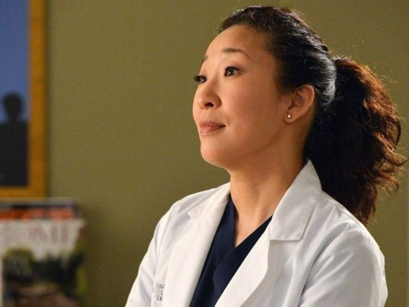

Mi nombre es Erick Urbina Lanzas, tengo 13 años de edad.
Estudio en el Colegio Sor Maria Romero 2do año de secundaria.
Me gusta aprender cosas nuevas y compartir con mis amigos.
En mis tiempos libres veo serie de television sobre medicina
pues quiero ser médico cardiovascular.
">
Eh escojido esta serie porque me gusta mucho informame de la carrera que quiero estudiar y las distintas especialidades y encontrar
que es lo que quiero estudiar. La que esta en la foto es Cristina Yang mi personaje favorito, además que es cardiologa, a demostrado ser una cirujana increible.